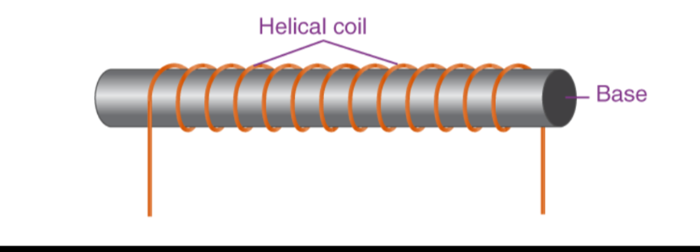
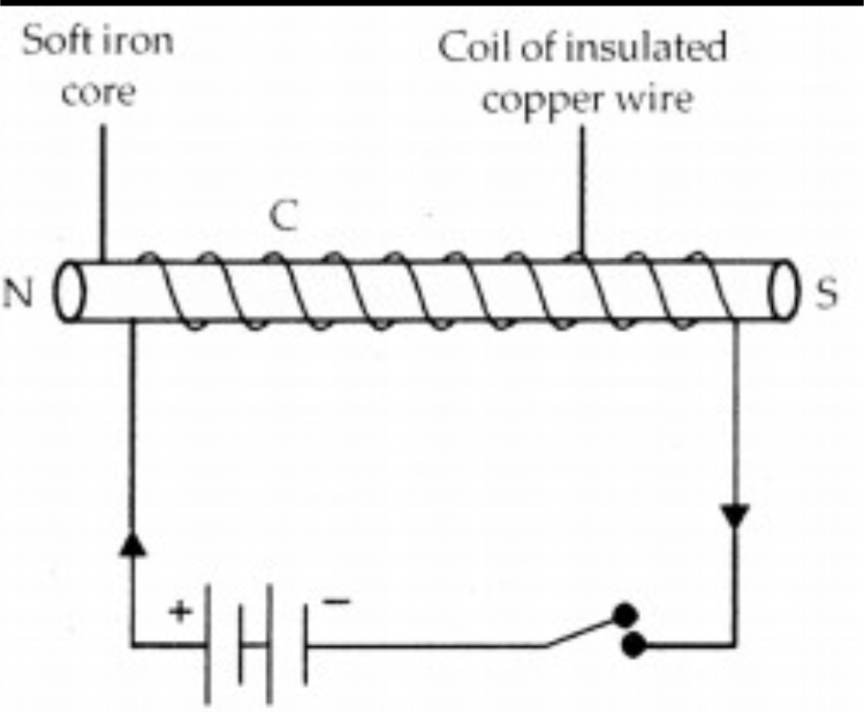
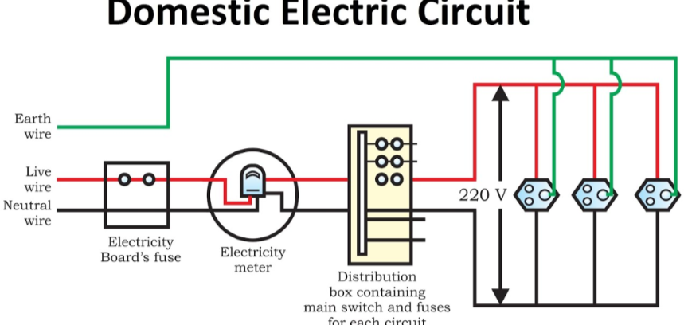

The material which can attract the magnetic substances such as cobalt, iron and nickel, is called a magnet.
The property of attracting the magnetic substance by a magnet is called magnetism.
The substances which are attracted by the magnet, are called the magnetic substances.
The points at the ends of the magnet where the attractive power is maximum, are called the poles of the magnet.
Each magnet has two poles.
A compass needle is a small bar magnet with north and south pole. It deflects due to repulsion/attraction with the bar magnet.
Pure iron is not used for making permanent magnets because it is easily magnetised and easily demagnetised. It cannot retain its magnetism for a long time.
Or, Name two applications in which permanent magnet is used?
Magnets are used in making
A magnetic line of force is a smooth curve in a magnetic field such that the tangent at any point on it gives the direction of the magnetic field at that point.
Properties of lines of force –
The two magnetic field lines never intersect each other as an intersection of the field lines means the magnetic field at that point has two directions, which is not possible.
The region around a magnet in which the effect of the magnet is experienced is called the magnetic field.
The factors on which force produced due to magnetic field depends are -
The phenomenon of producing magnetic field on flowing current in a conductor is called the magnetic effect of current.
Imagine that you are holding the current carrying wire in your right hand so that your thumb points in the direction of current, then the direction in which your fingers encircle the wire will give the direction of magnetic lines of force around the wire.
Use-This rule is used to know the direction of magnetic field lines.
If strected the palm of right hand such that the thumb and fingers are perpendicular to each other and the thumb point in the direction of current in conductor, the fingers point towards the point at which the direction of magnetic field is to be known, then the direction of magnetic field is normal to the open palm and outwards from the palm.
When a current carrying conductor is placed in a magnetic field, then the current carrying conductor experiences a force, which is known as magnetic force.
According to this rule, stretch the thumb, forefinger and middle finger of your left hand such that they are mutually perpendicular.
If the fore finger points in the direction of magnetic field and the middle finger in the direction of current, then the thumb will point in the direction of motion or the force acting on the conductor.
According to Fleming's left hand rule, the force experienced by a current carrying conductor placed in a magnetic field is largest (maximum) when it is placed perpendicular to the magnetic field.
A coil of many circular turns of insulated copper wire wrapped closely in the shape of a cylinder is called a solenoid.

A solenoid acts like a magnet because when electric current passes through its coil, it produces a magnetic field similar to that of a bar magnet. One end behaves like the north pole and the other like the south pole, creating a strong and uniform magnetic field inside the coil.
A temporary magnet formed due to the magnetic field of electric current is called an electromagnet.

It is made by winding wire over a core made of soft magnetic material. Once the current is switched off, the electromagnet loses its magnetism.
Uses –
The core of an electromagnet must be of soft iron because soft iron loses all of its magnetism when current in the coil is switched off. On the other hand, if steel is used for making the core of an electromagnet, the steel does not lose all its magnetism when the current is stopped and it becomes a permanent magnet. This is why steel is not used for making electromagnets.
Factors affecting the strength of an electromagnet:
An electromagnet better than a permanent magnet because:
Permanent Magnet | Electromagnet |
|---|---|
1. Polarity cannot be changed. | 1. Polarity can be changed by reversing the current flow. |
2. Strength remains constant. | 2. Strength can be changed by varying the magnitude of current. |
3. These are made of steel. | 3. These are made of soft iron |
Or, How does short circuit occur in an electric circuit?(2023)
When the insulation of a wire gets damaged and this naked wire comes in contact with other such wire i.e., live wire and neutral wire, the current flowing in the circuit rises and short circuiting occurs.

An earth wire is a safety wire that provides a direct path for electric current to flow into the ground in case of a fault.
The earth wire is connected as a safety measure with all electrical appliances that have a metallic body e.g., microwave, electric press, toaster, geyser, cooler, AC, etc.
Earth wire is necessary because it provides a safe path for leakage current.
If there is any leakage of current then the user would not get any current because the current flows down into the earth and keeps the potential of the appliance and the earth the same.
An electric fuse is a device which is used and connected in series with an electric circuit as a safety device to prevent the damage caused by short circuiting or overloading of the circuit.
Fuse wire is made of a thin alloy of copper (Cu) and tin (Sn) having a low melting point.
When excessive current flows, the fuse wire melts and breaks the circuit, protecting the appliances.